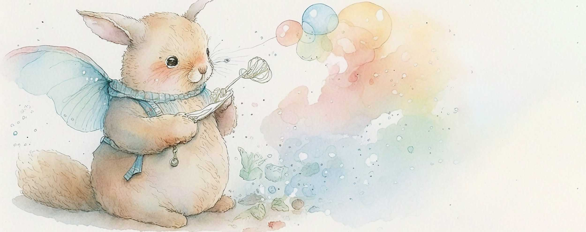

現品特価！あなたのカートに最後の一品を

私たちの目指す未来
経済の発展と共に増加した食品廃棄物。日本では、本来食べられるのに廃棄されてしまう「フードロス」は年間522万トンもあります。私たちはその中でもスーパーやコンビニで廃棄される売れ残り商品に注目し、売れ残っている商品をリアルタイムにお知らせします。消費者は商品を安く購入し、販売店は食品廃棄物を減らして利益を上げること。両者にとってのメリットを生み出すことが目標です。
>>>>>>> 7b02ce6 (foodloss_greeting/greeting.htmlを追加しました)
ここに挨拶文を書きます。サンプルテキスト。ここに挨拶文を書きます。サンプルテキスト。
ここに挨拶文を書きます。
ここに挨拶文を書きます。サンプルテキスト。
ここに挨拶文を書きます。サンプルテキスト。ここに挨拶文を書きます。サンプルテキスト。ここに挨拶文を書きます。
ここに挨拶文を書きます。サンプルテキスト。ここに挨拶文を書きます。
ここに挨拶文を書きます。サンプルテキスト。